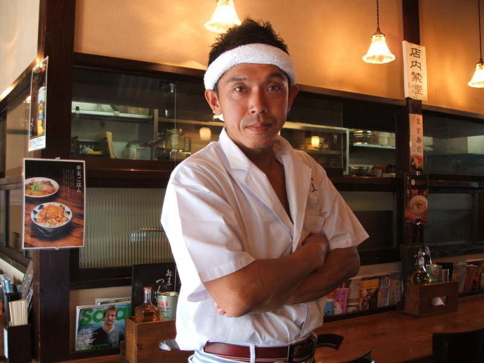
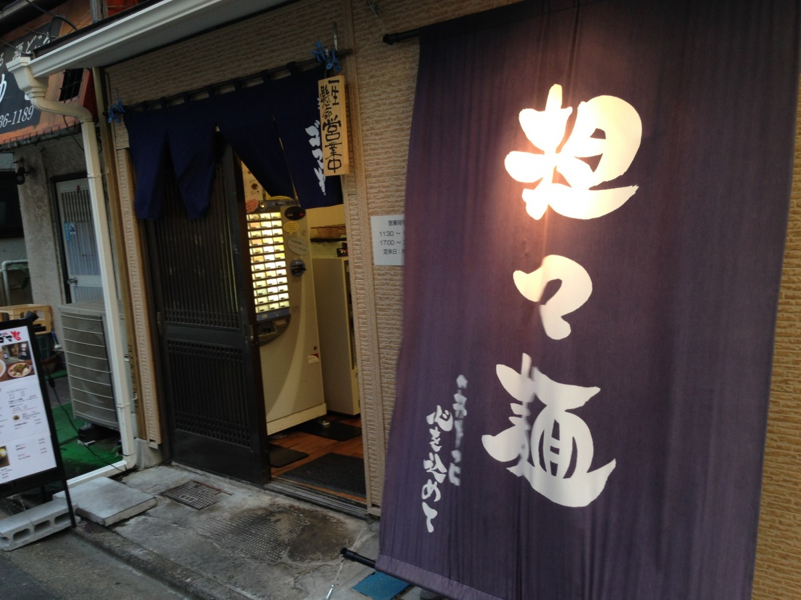

店主のあいさつ
東京担々麺 ゴマ哲 店主の田川 哲也と申します。
2014年3月30日のオープンより、たくさんのお客様にご来店頂いております。
中華料理出身でラーメン好きの私ですが、中でも担々麺が好きで食べ歩き続け、本場中国にも渡り、食べ歩いてまいりました。
その後、研究を続けて、東京担々麺 ゴマ哲の私好みの担々麺を完成させました。
辛いのが苦手の方でも食べられる辛さ控え目の担々麺から、程よい辛さの担々麺、また激辛党の方でも満足して頂ける旨辛の担々麺、更には本場の汁なし担担麺もご用意しております。
またお酒類や、自家製手巻き水餃子をはじめ、棒棒鶏やよだれ鶏、からあげなどの一品料理もございます。
亀戸駅より徒歩3分の路地裏で分かりにくい場所ではございますが、是非1度、東京担々麺 ゴマ哲にいらしてください。
2014年3月30日のオープンより、たくさんのお客様にご来店頂いております。
中華料理出身でラーメン好きの私ですが、中でも担々麺が好きで食べ歩き続け、本場中国にも渡り、食べ歩いてまいりました。
その後、研究を続けて、東京担々麺 ゴマ哲の私好みの担々麺を完成させました。
辛いのが苦手の方でも食べられる辛さ控え目の担々麺から、程よい辛さの担々麺、また激辛党の方でも満足して頂ける旨辛の担々麺、更には本場の汁なし担担麺もご用意しております。
またお酒類や、自家製手巻き水餃子をはじめ、棒棒鶏やよだれ鶏、からあげなどの一品料理もございます。
亀戸駅より徒歩3分の路地裏で分かりにくい場所ではございますが、是非1度、東京担々麺 ゴマ哲にいらしてください。

スタッフ紹介

スタッフ募集
東京担々麺 ゴマ哲 © 2016 All Rights Reserved.